2011.09.04
hi~~八百萬年不見啦！我們一家三口健在，過得很好很好！
很多人看到我就說很久沒卡卡的文章了，頻率已經多到每個人看到我就會問一次...噗！
連猛哥都忍不住，昨天突然對我說，你可不可以發個文，我好想看！罷偷。
(你你你這傢伙跟人家湊什嘛熱鬧啊!!兒子你不是天天看...= =)
anyway~~摩卡卡依舊天真活潑，依舊那模那模的可愛哇~~~
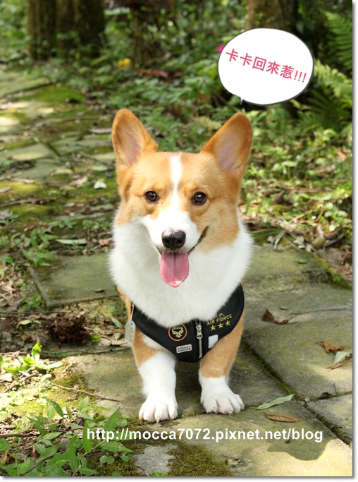
其實卡卡最近胖了，所以老木不願讓他見人，哈哈哈！
(這小傢伙變胖是事實，目前在減肥中～XD )
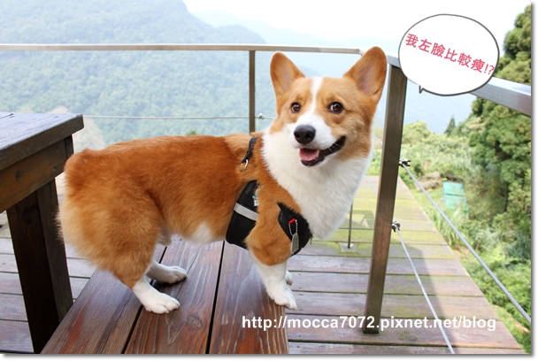
剛好上週朋友全家出國一趟，他們小HAPPY沒人照顧，
也不放心送去寄養住宿，所以我就帶回家安親五天！
這小妞運氣很好，我們一家很久沒出遠門了(?)週末正好有空想帶卡卡出去玩，被她跟到啦！
也一圓我帶兩隻柯基出門，但也徹底的粉碎了我再幫卡卡添兄弟的念頭 .gif")
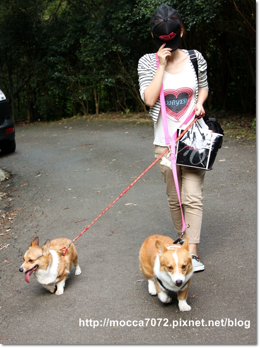
一大早打去問卡內拔請他推薦幾個景點，不虧是寵物旅遊達人，隨便就丟幾個給我
老爸推薦216莊園咖啡，雖然他自己根本也還沒去過！哈哈~派我先來探勘
另一個熊空農場‧是猛哥上網找到的鄰近景點，決定一起去晃晃

熊空這名字很可愛，有人說：因為從前山上很多熊，但後來熊都沒了，所以叫「熊空」；
另一個是「空」近似台語的「坑」，因為有許多熊出入的坑洞，所以就叫做熊空（坑）。
「第一觀景台」View很好，視野遼濶，連HAPPY都看得入神！不過坐位不多很快就滿了
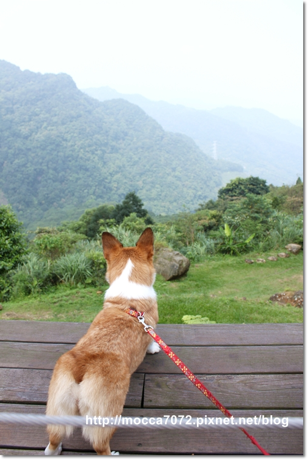
服務中心有販賣簡餐、飲料以及有機茶葉之類的農場相關產品
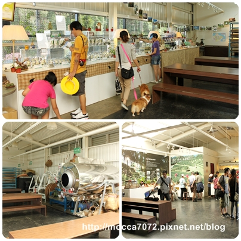
雖然這裡入園是免費，
但若想要進入它的親水杉林步道(600m)、有機茶園步道(1.2km)-->本日重點
就必需要到販賣部消費，低消記得好像是100元吧!?
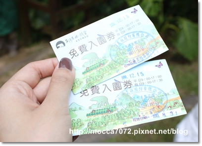
消費完拿了入園卷，工作人員就會幫你開小木門讓你進入親水杉林步道(600m)
許摩卡放牛吃草去，HAPPY的話還不知這小妞會不會跟著我，所以暫時看管
抱HAPPY真的是有夠輕鬆，才7公斤！！
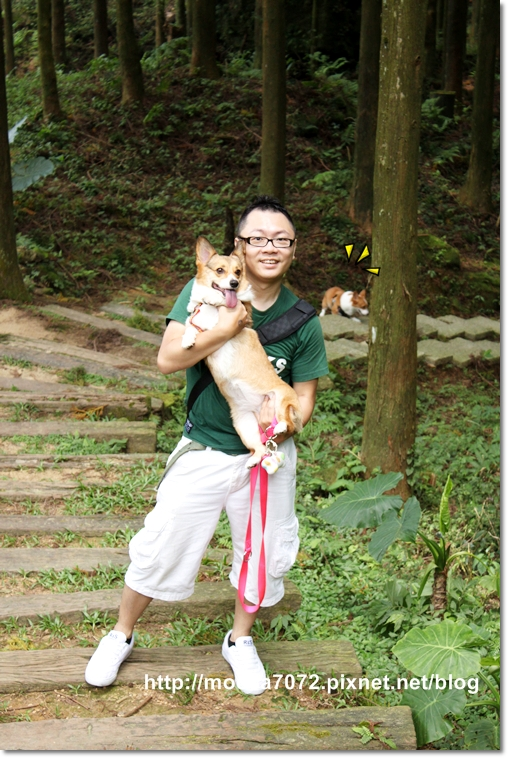
召回摩卡卡這野小孩跟拔拔合拍一張，猛哥瘦了一點拍照好看多啦！哈哈哈
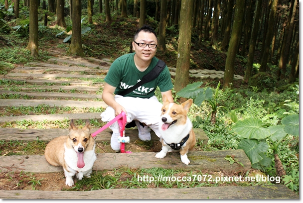
親水杉林步道是是園區海拔較低的地方，種植許多日本柳杉，步道僅長600公尺
走起來很舒服，有少少的階梯但不難走
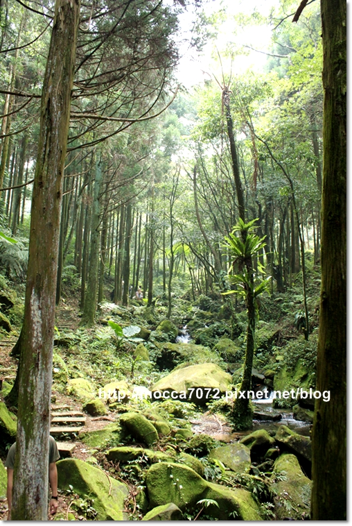
杉林裡還有條小溪蜿蜒而過，看到很多人在玩溪水，感覺很涼爽啊！
而且這次猛哥拍出的涓絲看起來挺厲害的耶～
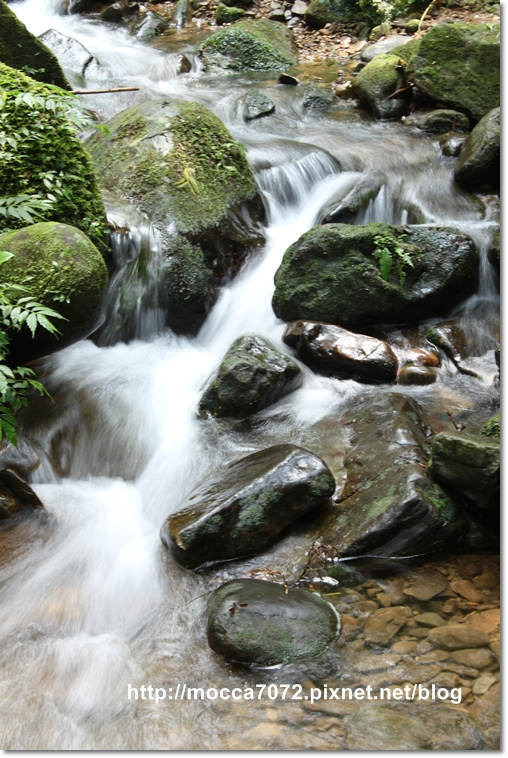
放開兩隻小吐子自由奔跑去，意外的小妞很乖，會主動跟著我們不敢離太遠，很好！
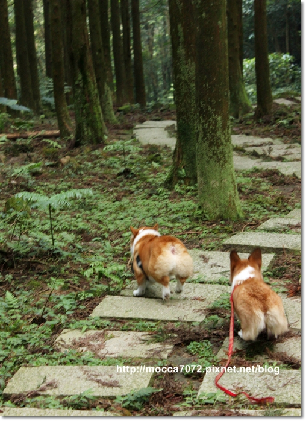
這兩位一前一後自動跳上矮桌，超可愛的！ 卡卡有種大葛哥的感覺～
卡卡有種大葛哥的感覺～
但他們兩最近的距離差不多就醬了，卡卡只要太靠近HAPPY，她馬上就彈走，噗！
我想卡卡的身材在她眼中是隻巨獸吧！！男生女生體型未免也差太多了～
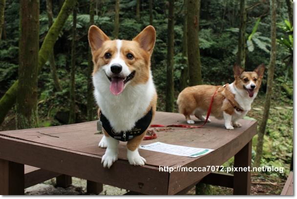
想讓他們兩個一起合照比登天還難！HAPPY抵死不從..................gif")
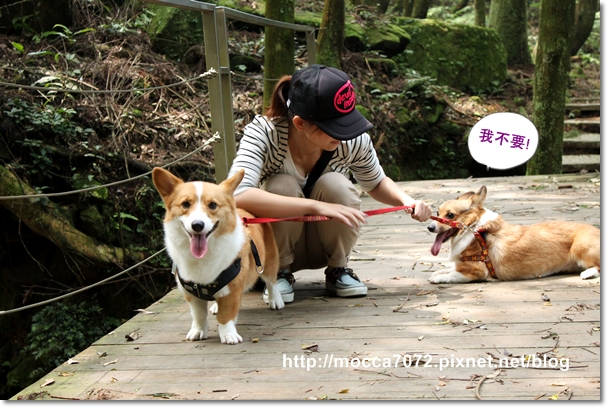
不管HAPPY怎嘛拉，肥肥卡連動都沒動一下..........真的胖了！！
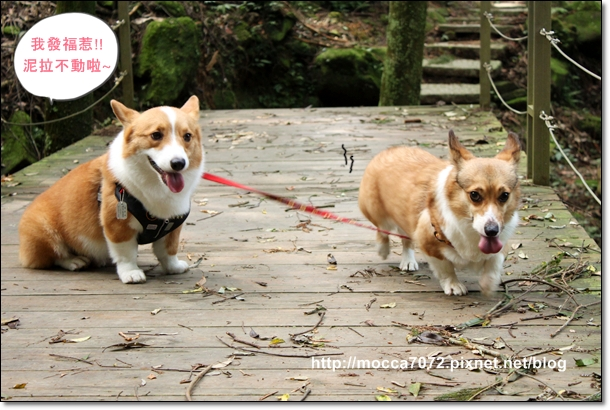
這張角度也太誇張了吧！！我兒好巨大！！！！
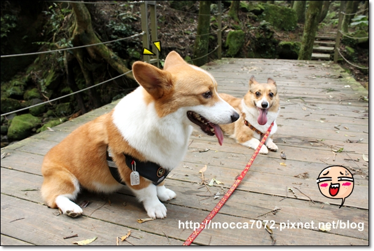
走完杉林步道接著想往服務中心後方的有機茶園移動，
沒想到告示牌上寫著禁止寵物進入........... 殘念！！
殘念！！
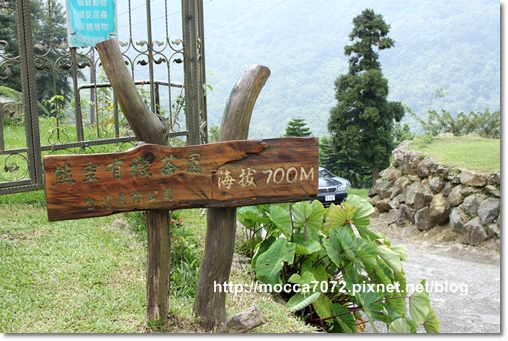
回販賣部領取剛點的飲料坐著休息一下，透明的不是開水，是冷泡茶，
老闆推薦的有機茶葉，沒辦法，減肥的人沒資格喝飲料～XD
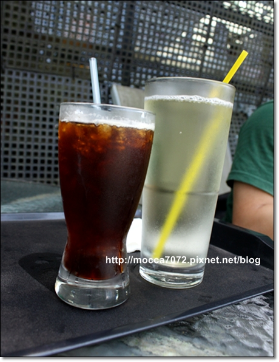
小鬼們跑跑跳跳累了，所以綁在一塊也沒有要逃脫的跡象，成功的完成合照一張 
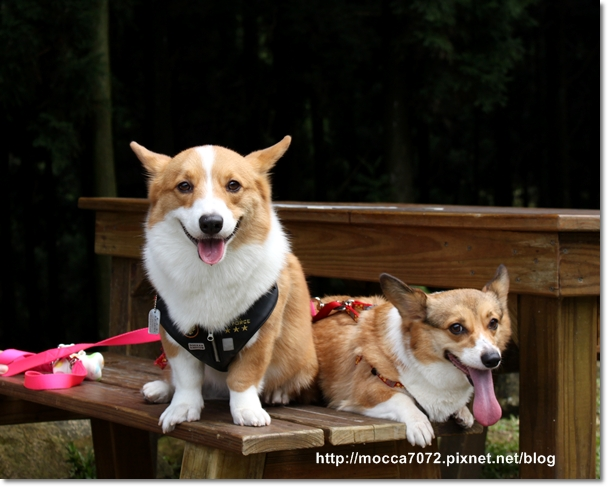
====================216莊園咖啡 ================================
================================
熊空結束後差不多是中午，因為不想吃那裡的簡餐，看起來超不美味的
所以我們就直接往回開往216咖啡吃午餐去，招牌矮矮小小，開很順直接過頭
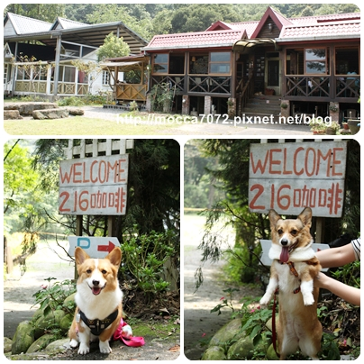
入口進來後有一大塊空地＆草皮，小木屋是室內的用餐區，當天已經有人預定都滿了
不過帶寵物前往也只適合坐戶外區而已
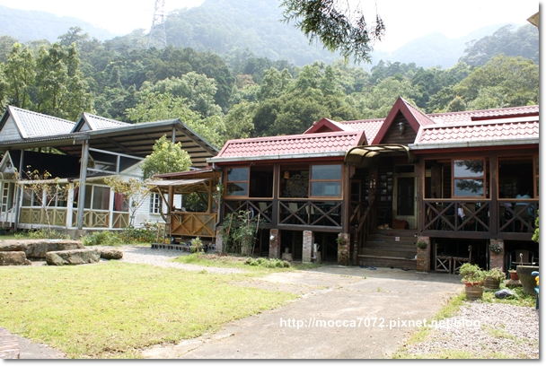
環璄很清悠舒適，旁邊就是戶外用餐區，有許多樹木遮陽，所以一點也不覺得熱，好加在！XD
而且一進去老闆就很熱情的招呼我們，感覺超好的！
後來老闆走進看到卡卡的時候，又說了一句又見面啦(?) （呃.....我們第一次來吶!）
哈哈哈~ 我想可能有其他柯基去，對於大眾來說柯基應該全部長一個樣吧！
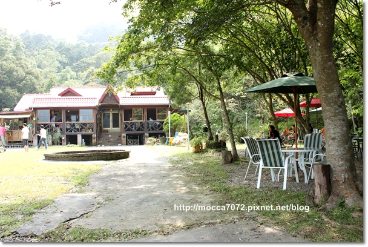
第二枚合照成功！！
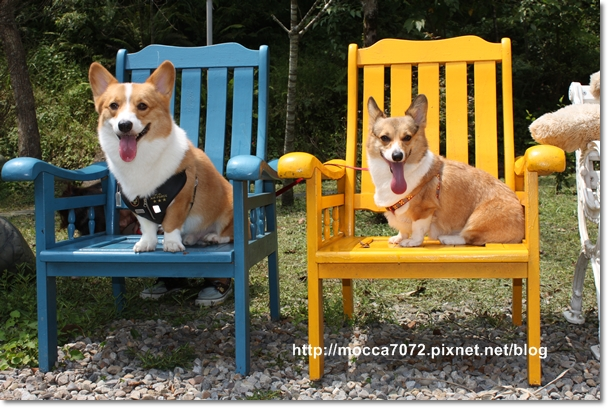
跟熊熊拍的卡卡好好笑！整個舒服的靠在熊身上
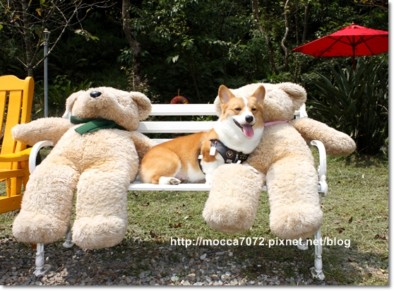
圓形水池裡面有魚，超愛魚魚的卡卡這絕對是不能錯過的啦！趴在上面看超久的
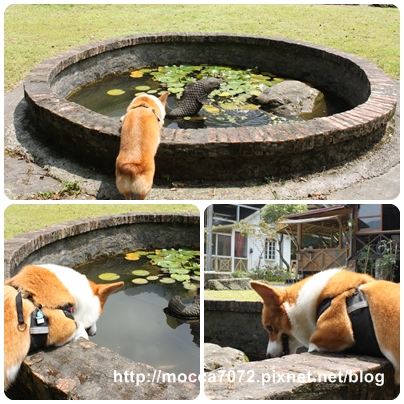
這裡的餐點味道也很不錯，附餐飲料可任選120元的一杯
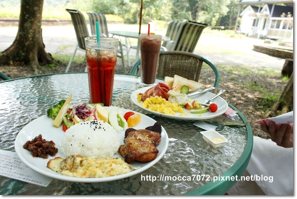
猛哥點的美式早午餐，蛋香、培根香，好吃！
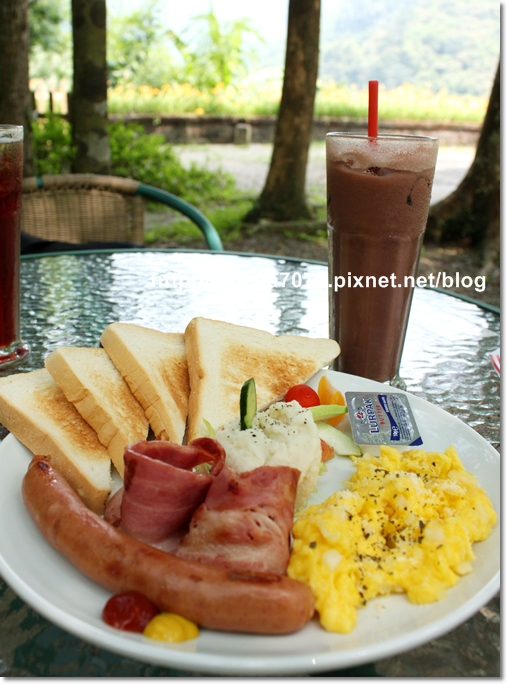
去骨檸檬雞腿飯，雞腿好入味搭配老闆自種的紫蘇葉超讚的！
蛋是加了剝皮辣椒煎的，好下飯啊！！
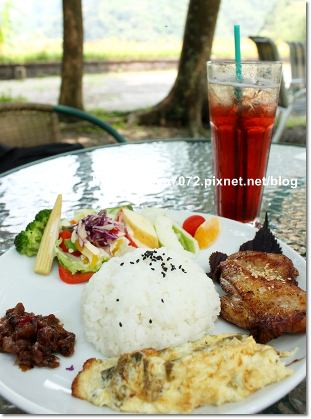
胡麻醬手工麵線 -->隔壁桌阿姨點的 XD
看起來很美味就借來拍張照，有機會去的捧油可以點點看嘍！
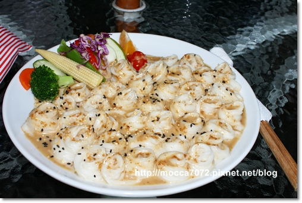
這次去意外的碰到了金針花盛開，超拉奇的！
前方的花台上有開了一些，老闆看到我在幫卡卡拍，跟我說往後山走那裡有更多！
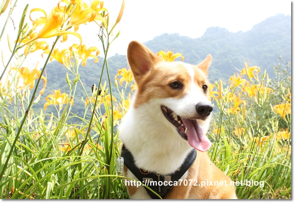
卡卡坐在這裡等等超可愛，猛哥拍了幾張欲罷不能，卡卡超棒！出來玩拍照總是笑嘻嘻
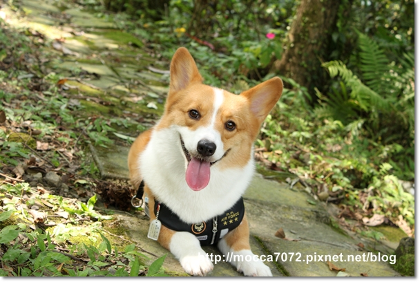
大家說說，卡卡這張是不是爆炸的可愛啦！！
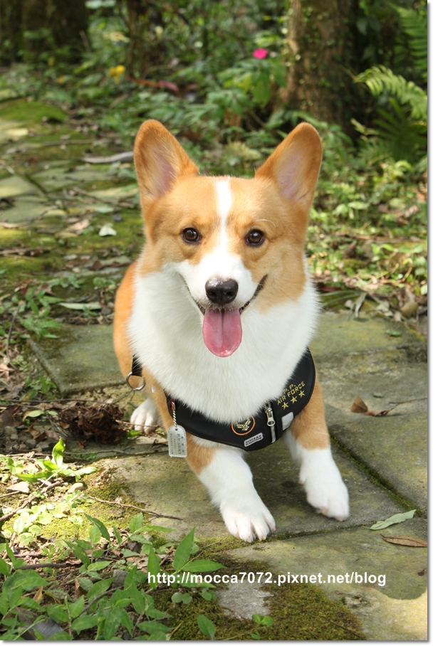
黑皮皮吐個小舌頭也超可愛的，只不過這小妞超級不愛看鏡頭，一對著她就會閃..... 
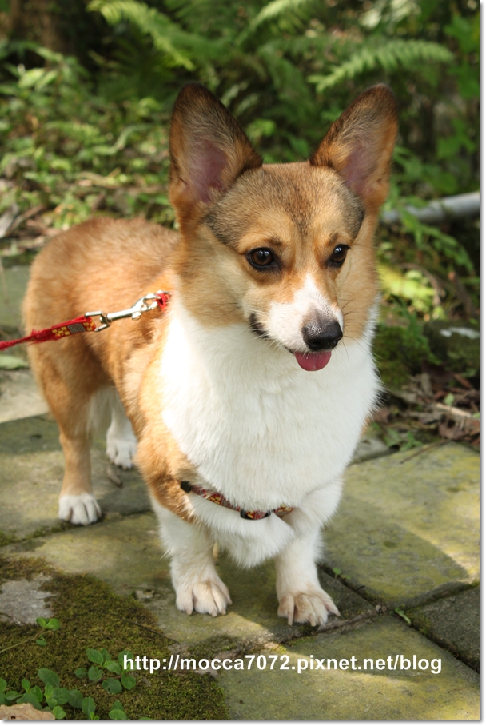
多拍一些回去送給媽媽厚！HAPPY出門有乖乖聽話~
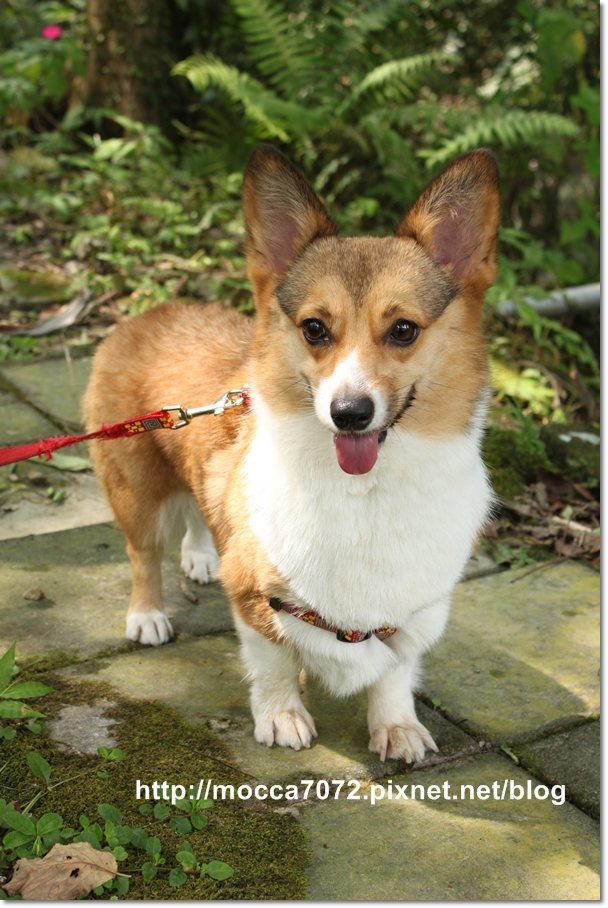
帶著兩犬後山走，小小的階梯一上去就看到一片小小的金針花海
當然跟60石山的沒得比啦！哈哈哈 但對我們暫時無法跑那嘛遠的人來說很滿足了
意外的收獲，兒子第一次看金針花 
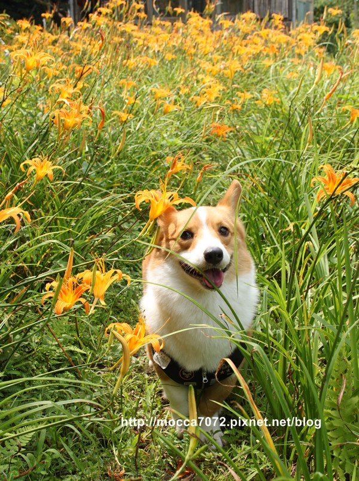
想跟寶貝們拍一張，短腿在花叢裡一整看不到....噗！
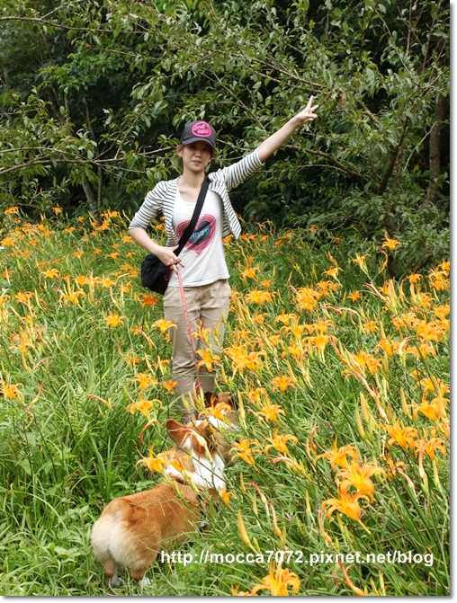
我就說抱這隻真的很輕鬆，完全不費力！
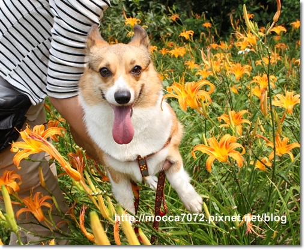
抱這隻我整個腰都彎了，
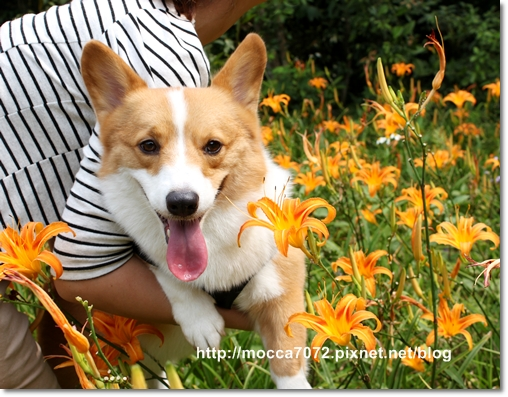
摩卡卡這張好有ＦＵ呦！如果可以幫媽媽我給砍掉就好惹，破壞帥照一張！
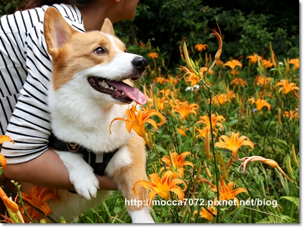
結束美好的金針花之旅(?)回家嘍！！
小妞聽到回家用衝的，笑噴！！殊不知回到我家變小可年啊～哈哈哈
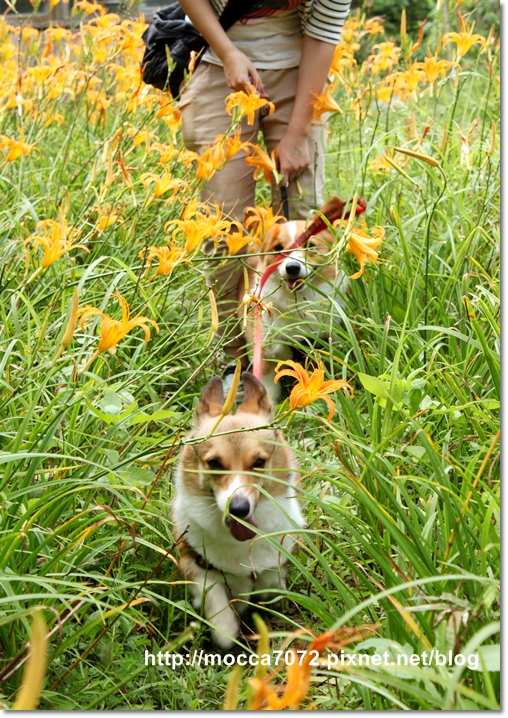
216莊園咖啡
地址：三峽鎮竹崙路216巷5號
服務時間 0900-1900 每週五公休
Tel: 02-26681105
＝＝＝＝＝＝＝＝＝＝＝＝＝＝＝＝＝＝＝＝＝＝＝＝＝＝＝＝＝＝＝
上車抱著兩隻小毛頭，超溫馨的厚！
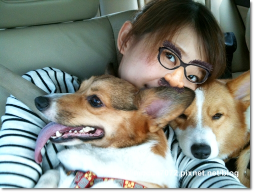
其實許摩卡超賣頌的！哈哈哈 在車上根本就不能面對面好ㄇ，我兒子會皺鼻鼻愛生氣
這次安親我發現在卡卡認定的領域內，所有東西都是他的，抱括拔拔麻麻，
在外面隨便要怎樣都沒關西，在家裡卻完全相反，隨時都盯著小客人，很容易擦槍走火，
搞得我跟猛哥都緊張兮兮的，還好只有前兩天比較可怕，後三天彼此也都適應了一些
HAPPY送回家後我們兩個也虛脫了~哈哈哈
卡內麻打來我還問她，卡卡去你家安親你也是這嘛累嗎！？
當下真的覺得卡ㄋㄟ很大方，任憑卡卡在天母國撒野，除了上演咒怨很好笑之外！
完全不會生氣，好棒棒！
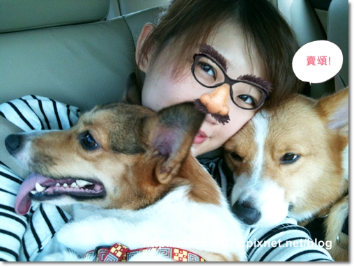
總之，在卡卡有生之年，我徹底的斷了同時養兩隻的可能 XD
而且我想我也沒辦法把愛分給其他小狗兒，就讓你繼續獨享老娘的愛吧！小氣兒子